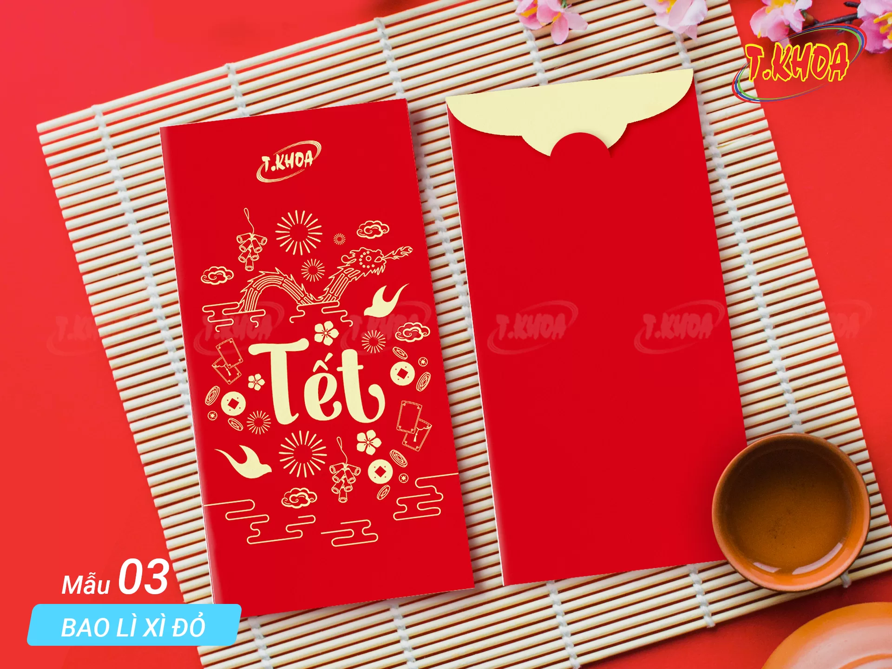
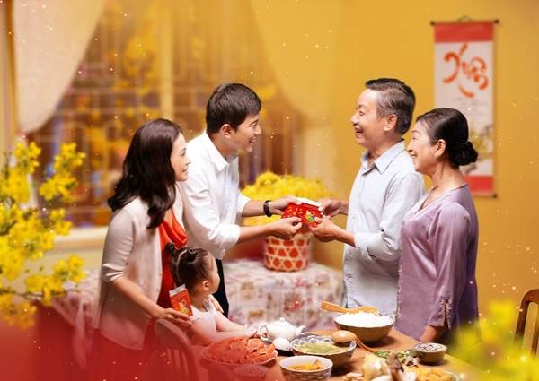

🧧 Lì Xì Đầu Năm
Ý Nghĩa Phong Tục Lì Xì
Lì xì (hay mừng tuổi) là phong tục đẹp trong ngày Tết của người Việt Nam. Đây là việc người lớn
tặng tiền cho trẻ em và người già trong những ngày đầu năm mới, với mong muốn mang lại may mắn,
tài lộc và sức khỏe.
Từ "lì xì" có nguồn gốc từ tiếng Quảng Đông (lai see), có nghĩa là "tiền may mắn".
Phong tục này thể hiện tình yêu thương, sự quan tâm và những lời chúc tốt đẹp.
Ý Nghĩa Sâu Sắc
- Mang lại may mắn: Tiền lì xì tượng trưng cho tài lộc, may mắn trong năm mới
- Thể hiện tình yêu thương: Người lớn thể hiện tình cảm với trẻ em và người già
- Giáo dục: Dạy trẻ em về lòng biết ơn và cách ứng xử lễ phép
- Gắn kết gia đình: Tăng cường mối quan hệ giữa các thế hệ
- Văn hóa: Gìn giữ truyền thống tốt đẹp của dân tộc
Lì Xì Cho Ai?
1. Lì Xì Cho Trẻ Em
Đây là đối tượng chính nhận lì xì. Trẻ em thường được lì xì từ:
- Ông bà, cha mẹ
- Cô chú, bác, dì
- Anh chị em họ
- Họ hàng, bạn bè của gia đình
Độ tuổi: Thường từ khi còn nhỏ cho đến khi trưởng thành (khoảng 18-20 tuổi),
hoặc cho đến khi đi làm, lập gia đình.
2. Lì Xì Cho Người Già
Con cháu thường lì xì cho ông bà, cha mẹ lớn tuổi để:
- Thể hiện lòng hiếu thảo
- Cầu mong sức khỏe, trường thọ
- Chúc may mắn, an khang
3. Lì Xì Cho Người Đi Làm
Trong một số gia đình, người đi làm cũng được lì xì từ ông bà, cha mẹ như một lời chúc
công việc suôn sẻ, thăng tiến trong năm mới.
Cách Lì Xì
1. Bao Lì Xì
Tiền lì xì thường được đựng trong bao lì xì đỏ (phong bao đỏ) với:
- Màu đỏ tượng trưng cho may mắn, thịnh vượng
- In hình chữ may mắn, hoa mai, hoa đào, hoặc 12 con giáp
- Kích thước vừa phải, dễ cầm
2. Số Tiền Lì Xì
Số tiền lì xì không quan trọng bằng ý nghĩa. Thường chọn số tiền:
- Số chẵn, may mắn: 20.000đ, 50.000đ, 100.000đ, 200.000đ
- Tránh số 4: Vì phát âm giống "tử" (chết) trong tiếng Hán
- Ưu tiên số 8, 9: Số 8 (phát), số 9 (trường cửu)
- Quan trọng là tấm lòng, không nên so sánh số tiền
3. Cách Trao Lì Xì
- Chuẩn bị bao lì xì đẹp, mới
- Bỏ tiền vào bao, gấp gọn gàng
- Trao bằng hai tay với thái độ vui vẻ, thân thiện
- Kèm theo lời chúc tốt đẹp
- Trẻ em nhận bằng hai tay và nói lời cảm ơn
Lời Chúc Tết Truyền Thống
💝 Lời chúc khi lì xì cho trẻ em:
- "Chúc cháu năm mới ngoan ngoãn, học giỏi!"
- "Chúc con năm mới khỏe mạnh, thông minh!"
- "Lì xì cho cháu, chúc cháu năm mới vui vẻ, may mắn!"
- "Chúc cháu năm mới đạt nhiều thành tích tốt!"
- "Lì xì cho con, chúc con năm mới hạnh phúc!"
👴 Lời chúc khi lì xì cho người già:
- "Con chúc bà năm mới sức khỏe dồi dào, sống lâu trăm tuổi!"
- "Cháu chúc ông năm mới an khang, trường thọ!"
- "Con lì xì cho mẹ, chúc mẹ năm mới vui vẻ, khỏe mạnh!"
- "Cháu chúc bác năm mới vạn sự như ý!"
Cách Nhận Lì Xì
Khi nhận lì xì, trẻ em nên:
- Nhận bằng hai tay với thái độ lễ phép
- Nói lời cảm ơn: "Con cảm ơn ông/bà/bác/chú..."
- Chúc lại người tặng: "Con chúc ông/bà năm mới..."
- Không mở bao lì xì ngay trước mặt người tặng
- Giữ gìn bao lì xì, không vứt bừa bãi
Thời Điểm Lì Xì
- Mùng 1 Tết: Ngày quan trọng nhất, lì xì cho tất cả trẻ em và người già
- Mùng 2, mùng 3: Tiếp tục lì xì khi đi thăm họ hàng
- Trong suốt dịp Tết: Có thể lì xì khi gặp trẻ em lần đầu trong năm
Ý Nghĩa Giáo Dục
Phong tục lì xì còn có ý nghĩa giáo dục quan trọng:
- Dạy lòng biết ơn: Trẻ em học cách cảm ơn khi nhận quà
- Dạy cách ứng xử: Học cách lễ phép, kính trọng người lớn
- Dạy quản lý tài chính: Học cách tiết kiệm, sử dụng tiền hợp lý
- Dạy giá trị văn hóa: Hiểu về truyền thống tốt đẹp của dân tộc
Lưu Ý Quan Trọng
- Lì xì là tấm lòng, không nên so sánh số tiền
- Quan trọng là ý nghĩa và cách trao nhận, không phải số tiền
- Nên dạy trẻ em biết ơn và sử dụng tiền lì xì hợp lý
- Không nên ép buộc hoặc yêu cầu lì xì
- Giữ gìn phong tục tốt đẹp này cho các thế hệ sau

🧧 Lì Xì
Bao lì xì đỏ may mắn
👶 Trẻ Em
Lì xì cho trẻ em

🎊 Chúc Tết
Chúc Tết và trao lì xì
Biến Thể Hiện Đại
Ngày nay, phong tục lì xì có một số biến thể:
- Lì xì điện tử: Chuyển tiền qua ứng dụng ngân hàng
- Lì xì quà tặng: Thay vì tiền, có thể tặng sách, đồ chơi, quần áo
- Lì xì từ xa: Gửi lì xì cho người thân ở xa qua bưu điện
Tuy nhiên, lì xì truyền thống bằng tiền mặt trong bao đỏ vẫn là phổ biến và ý nghĩa nhất.